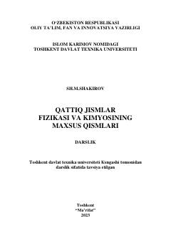

QJQattiq jismlar fizikasi va kimyosining nazariy hamda amaliy asoslarini o'rganish uchun mo'ljallangan darslik.
Ushbu darslik texnika oliy o'quv yurtlari talabalari uchun mo'ljallangan bo'lib, qattiq jismlar fizikasi va kimyosining maxsus qismlarini o'z ichiga oladi. Kitobda atom strukturasi, kristall panjaradagi nuqsonlar, diffuziya hodisasi, mexanik xossalar, faza diagrammalari va nanokristall strukturaga ega materiallar yoritilgan. Shuningdek, soha mutaxassislari uchun ham amaliy qo'llanma sifatida xizmat qiladi.